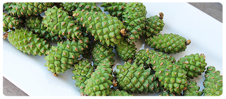

" Η ΠΛΑΤΗ ΚΑΙ ΟΙ ΑΡΘΡΩΣΕΙΣ ΘΕΡΑΠΕΥΟΝΤΑΙ ΣΕ ΚΑΘΕ ΗΛΙΚΙΑ!"- δόκτωρ ιατρικών επιστημών, καθηγήτρια, Αικατερίνη Αμακίδη
Αικατερίνη Αμακίδη
Ελληνίδα γιατρός, καρδιολόγος, θεραπευτής, δόκτωρ των ιατρικών επιστημών, καθηγήτρια. Πρύτανης του Ιατρικού Πανεπιστημίου. Αρχισυντάκτης των περιοδικών "Η καρδιά και τα αγγεία","Πόνος στις αρθρώσεις" και Therapia. Αντεπιστέλλον-μέλος της Ακαδημίας Ιατρικών Επιστημών της Ελλάδας. Η κόρη του διάσημου χειρουργού του Νικολάου Αμακίδη.
Ιατρική πρακτική:πάνω από 30 χρόνια.
« Θυμηθείτε την απλή αλήθεια και μην ακούτε κανέναν: οι αρθρώσεις είναι πάντοτε θεραπευτές, ακόμα και στην πιο βαθιά γήρανση».
Αυτή δηλώνει, ότι θα θεραπεύσει την 18χρονη οστεοχόνδρωση μέσα σε μερικές μήνες. Θα θεραπεύσει πλήρως την μια γερή με την πιο προχωρημένη αρθρίτιδα μέσα σε 78 ημέρες. Και οι πόνοι στις αρθρώσεις, με τη σωστή προσέγγιση θα φύγουν μόλις σε 10 ημέρες! Και, κατά τη διάρκεια 34 ετών ιατρικής δραστηριότητας της, αυτή επιβεβαιώνει κάθε δήλωση της με την πρακτική. Αμέσως μετά την παρουσίαση στο τηλεοπτικό κανάλι ΕΡΤ1 (με θέμα "πώς να διατηρήσετε τις αρθρώσεις σε κάθε ηλικία" ), συμφώνησε να μας δώσει μια συνέντευξη η γνωστή καθηγήτρια η Αικατερίνη Αμακίδη
— Γεια σας, κύρια Αικατερίνη. Πείτε μας, είναι αλήθεια, ότι οι ασθένειες των αρθρώσεων και η οστεοχόνδρωση - είναι οι "υποχρεωτικοί" σύντροφοι της ώριμης ηλικίας ;
— Γεια σου, Ειρήνη! Φυσικά, αυτό δεν είναι αλήθεια. Οι υποχρεωτικοί σύντροφοι της ώριμης ηλικίας - είναι μια υπερβολική εμπιστοσύνη στους γιατρούς, οι οποίοι σας θεραπεύουνε εδώ και 10 χρόνια, αλλά δεν μπορούν να θεραπεύσουν. Και στην πραγματικότητα, οι αρθρώσεις και ολόκληρος ο σκελετός είναι εκπληκτικά επιδεκτικοί στη θεραπεία σε οποιαδήποτε ηλικία. Αυτό δεν είναι θαύμα, αλλά είναι μια απλή επιστήμη. Και αν γνωρίζετε το μυστικό και εφαρμόζετε λίγο την πειθαρχία - μπορείτε να θεραπεύεστε ακόμα και στις σπιτικές συνθήκες και πολύ γρηγορά, ότι και κάνουν οι χιλιάδες ασθενείς μου.
— Και τι είναι αυτό το μυστικό;
— Το μυστικό - είναι για να καταλάβετε, γιατί εμφανίζεται ο πόνος. Οι εγκυκλοπαίδειες απαριθμούν έως και 147 πιθανές αιτίες ανάπτυξης της οστεοχόνδρωσης και της οστεοαρθρίτιδας, αλλά η συνέπεια είναι πάντα η μια – οι αρθρώσεις, οι σπόνδυλοι και οι χόνδροι χάνουν την ελαστικότητά τους, από εκεί και εμφανίζεται ο πόνος. Φθείρονται λόγω της κακής παροχής του αίματος. Εδώ είναι όλο το μυστικό -αποκαθιστώντας την παροχή αίματος στην άρθρωση, εμείς την θεραπεύουμε!
— Ναι, αλλά θεωρείται, ότι είναι σχεδόν αδύνατο να αποκατασταθεί η κυκλοφορία του αίματος μετά από την ηλικία των 45 ετών;
— Αυτό είναι όλα ανοησίες! Εγώ έχω ανεβάσει τους ανθρώπους ακόμα και από την αναπηρική καρέκλα. Αλλά οι περισσότεροι από τους ασθενείς μου - είναι απλοί άνθρωποι άνω των 40 ετών, στους οποίους οι ασθένειες εμφανίστηκαν "με την ηλικία". Αυτοί έρχονται με πολύ παρόμοια προβλήματα: η οστεοχόνδρωση, η οστεοαρθρίτιδα, η αρθρίτιδα, η ισχιαλγία, το τσιμπημένο νεύρο. Αυτές οι ασθένειες εξαντλούνε και εμποδίζουν τη ζωή. Οι ασθενείς κλαίνε, έχουν πόνους, περπατάνε με μεγάλη δυσκολία. Και, φαίνεται, είναι απλοί άνθρωποι – δεν είναι οι αθλητές ή άτομα με ειδικές ανάγκες. Και διαμαρτύρονται - "γιατί σε μένα, γιατί εγώ;". Και εγώ τους απαντώ: ας μην κλαίμε, αλλά να αποκαταστήσουμε την κυκλοφορία του αίματος.
— Και πώς να αποκαταστήσουν την παροχή αίματος σε αυτή την ηλικία;
— Μέχρι πρόσφατα, εγώ θεράπευα τους ανθρώπους με την βοήθεια της κίνησης και με ένα σύνολο των 96 ασκήσεων στους προσομοιωτές. Αυτή είναι μια εξαιρετικά αποτελεσματική, αλλά πολύ δύσκολη και μεγάλης διάρκειας η μέθοδος. Οι άνθρωποι πονάνε, είναι πολύ δύσκολα, δεν έχουν αρκετό χρόνο για να επισκεφθούν το γυμναστήριο. Εγώ πίστευα, ότι πρέπει να υπάρχει ένας πιο σύγχρονος και εύκολος τρόπος – και τελικά τον βρήκα.
— Πολύ ενδιαφέρον είναι! Θα πείτε γι’ αυτό στους αναγνώστες μας;
— Και βέβαια θα πω. Το Κέντρο μας ήταν το πρώτο στην Ελλάδα, που έλαβε πιστοποιημένη πρόσβαση στο νεότερο σκεύασμα για οστεοχόνδρωση και πόνο στις αρθρώσεις. Σας ομολογώ, όταν άκουσα για αυτό για πρώτη φορά - απλά γέλασα, γιατί δεν πίστευα στην αποτελεσματικότητά του. Αλλά ήμουν έκπληκτη, όταν ολοκληρώσαμε τη δοκιμή – τα 4 567 άτομα θεραπεύθηκαν πλήρως από τις αρρώστιες τους, και αυτό είναι πάνω από το 94% όλων των δοκιμασμένων. Το 5,6% αισθάνθηκαν τις σημαντικές βελτιώσεις και μόλις το 0,4% δεν παρουσίασαν καμία βελτίωση.
— Και τι σκεύασμα είναι αυτό;
— Μιλάω για μια ειδική κρέμα
Arthromed. Αυτό το σκεύασμα μπορεί να βοηθήσει το συντομότερο δυνατόν, κυριολεκτικά μέσα σε 10 ημέρες να ξεχάσετε τον πόνο στην πλάτη και στις αρθρώσεις και ακόμη και πολύ περίπλοκες παθήσεις μπορεί να θεραπεύσει μέσα σε μερικές μήνες. Παράγεται μόνο στην Ελλάδα και το Ιατρικό Ίδρυμα δαπάνησε 1,3 εκατομμύρια ευρώ για την ανάπτυξη συνταγών. Και εμείς, παρεμπιπτόντως, καταβάλλαμε σχεδόν 100 χιλιάδες ευρώ για το δικαίωμα να πουληθεί στο έδαφος της Ελλάδας.
— Δηλαδή, αποδεικνύεται ότι Arthromed μπορούν να αγοράσουν μόνο στην Ελλάδα;
— Ναι, προς το παρόν. Αλλά σύντομα θα είναι διαθέσιμο για τους κατοίκους της Ευρώπης και της ΕΕ.
Πηγαίνετε στην ιστοσελίδα του κατασκευαστή
— Και πώς λειτουργεί αυτή τη θαυματουργή κρέμα;
— Δεν υπάρχει κανένα θαύμα εδώ, είναι η σκέτη επιστήμη. Η κρέμα
Arthromed κατασκευάζεται από μοναδικούς σιβηρικούς κώνους και φυσικά συστατικά. Οι σιβηριακοί κώνοι περιέχουν φυσική χονδροϊτίνη και γλυκοζαμίνη. Χονδροϊτίνη - διεγείρει τη σύνθεση του υαλουρονικού οξέος, ενισχύοντας τις δομές του συνδετικού ιστού: χόνδροι, τένοντες, συνδέσμους. Έχει αναλγητικό και αντιφλεγμονώδες αποτέλεσμα, προάγει την ενεργή αναγέννηση του χόνδρου. Η γλυκοζαμίνη - θρέφει τις αρθρώσεις και τον συνδετικό ιστό, αποτρέπει την καταστροφή τους, εδραιώνει πλήρως το αποτέλεσμα της θεραπείας. Με τέτοιο τρόπο, η κρέμα "Arthromed" βοηθά να απαλλαγούμε από τον πόνο στις αρθρώσεις και να επαναφέρουμε τις λειτουργίες τους χωρίς χειρουργικές επεμβάσεις.

— Ακούγεται εντυπωσιακό. Απλά μας εξηγήστε, τι σημαίνει αυτό για τους απλούς ανθρώπους με ασθένειες;
— Αυτό σημαίνει, ότι η μεσαιωνική ιατρική μένει στο παρελθόν και εσείς μπορείτε να θεραπεύσετε τις αρθρώσεις σας στις σπιτικές συνθήκες μέσα σε μια αγωγή θεραπείας. Η κρέμα
Arthromed, δεν παγώνει, δεν αναισθητοποιεί, αλλά ακριβώς "επανεκκινεί" τον οργανισμό σε κυτταρικό επίπεδο. Αυτή εξαλείφει την αιτία των ίδιων των πόνων και επιστρέφει τις αρθρώσεις και την σπονδυλική στήλη στην αρχική, κανονική κατάσταση τους. Ο ασθενής δεν απαλλάγγεται απλά από τα συμπτώματα, αλλά απομακρύνει τη ρίζα της νόσου.
Την πρώτη κιόλας ημέρα, η κρέμα ξεκινάει το σύστημα αναγέννησης του οργανισμού. Και σταματάει, βέβαια, το σύνδρομο του πόνου, αυτό εσείς θα αισθανθείτε αμέσως. Ήδη σε δύο - τρεις εβδομάδες της θεραπείας η αγωγή θα ολοκληρωθεί, και, το πιο σημαντικό – εσείς δε θα επιτρέψετε εκ νέου την εμφάνιση του πόνου, αμέσως επαναλαμβάνοντας την αγωγή.
— Η κρέμα Arthromed βοηθά μόνο από την οστεοαρθρίτιδα και την οστεοχόνδρωση;
— Όχι, εγώ σας ξαναλέω: αυτή δρα σε κυτταρικό επίπεδο, αποκαθιστώντας την παροχή αίματος. Αυτή θεραπεύει κάθε ασθένεια, που σχετίζονται με τις αρθρώσεις και τη σπονδυλική στήλη - η οστεοαρθρίτιδα και η αρθρίτιδα, η οστεοπόρωση, ρευματισμούς, ισχιαλγία και οστεοχόνδρωση και οι άλλες - κρέμα είναι περίεργο αποτελεσματική.
— Αυτό είναι ένα πολύ ενδιαφέρον σκεύασμα. Και τι, αυτό στα αλήθεια μπορεί να απαλλάσσει από όλες αυτές τις ασθένειες, και όχι μόνο εξαλείφει τον πόνο;
— Η κρέμα ΧΧ και εξαλείφει τον πόνο (στα αρχικά στάδια της θεραπείας), και εντελώς θεραπεύει τις ασθένειες. Μη με παρεξηγείτε – εγώ αγαπώ την γυμναστική και τον αθλητισμό, και δεν θα σταματήσω να ασχοληθώ μ αυτά, αλλά για το μεγαλύτερο ποσοστό των ασθενών, αυτή την κρέμα – είναι ο πιο απλός, αποτελεσματικός και προσιτός τρόπος για τη θεραπεία.
— Νομίζω, ότι πολλοί θα ρωτήσουν: από πού μπορούμε να την αγοράσουμε;
— Εμείς θέλαμε να ξεκινήσουμε πωλήσεις μεγάλης κλίμακας σε φαρμακεία - αλλά δεν μπορούμε να διαπραγματευτούμε με τους φαρμακοποιούς, καθώς η κρέμα μπορεί να βλάψει την επιχείρησή τους. Οι άνθρωποι εδώ και χρόνια αγοράζουν τα φάρμακά τους, καθώς και οι ασθενείς γίνονται μόνο περισσότερο, και η κατάσταση αυτή τους συμφέρει. Ως εκ τούτου, τώρα πουλάμε αποκλειστικά στην επίσημη ιστοσελίδα. Αλλά εδώ υπάρχουν και πλεονεκτήματα – εμείς πουλάμε χωρίς μεσάζοντες, και αυτό μας επιτρέπει να θέσουμε την τιμή 5 φορές χαμηλότερη από ότι πωλείται αυτή σε άλλες χώρες. Παράδοση με courier, η πληρωμή μετά την παραλαβή του, καθώς και για χρήση δεν χρειάζεται έλεγχος του ειδικού – η θεραπεία είναι σπιτική. Ωστόσο, μην με πιστέψτε. Δοκιμάστε φάρμακα άλλων κατασκευαστών. Αλλά είμαι σίγουρη, ότι δεν θα μπορέσετε να βρείτε τίποτα, έστω, να μοιάζει με
Arthromed με την αποτελεσματικότητα του.
— Κυριά Αικατερίνη, σας ευχαριστώ για την συνέντευξη! Μήπως θέλετε να πείτε ακόμη κάτι στους αναγνώστες μας, πριν να αποχαιρετιστούμε;
— Ναι, φυσικά! Θέλω να επιστήσω την προσοχή των αναγνωστών, ότι οι παθήσεις της σπονδυλικής στήλης και των αρθρώσεων "γίνονται νεότερης ηλικίας", και ακόμη και αδύναμοι περιοδικοί πόνοι - είναι ένας λόγος να δώσουμε προσοχή σε αυτό το πρόβλημα. . Ο γιατρός δεν θα σας πείσει να κάνετε την θεραπεία. Και να θυμάστε: οι ασθένειες που προκύπτουν από πόνους στην πλάτη και τις αρθρώσεις, δεν προκαλούν μόνο δυσφορία. Αυτές συντομεύουν τη ζωή για 10-15 χρόνια.
— P.S.: Η Αικατερίνη Αμακίδη προσωπικά έδωσε εντολή να παρέχεται έκπτωση στους πρώτους 50 αγοραστές της κρέμας
Arthromed! Πηγαίνετε στην επίσημη ιστοσελίδα και, ίσως θα είστε τυχεροί να είστε μεταξύ αυτούς τους τυχερούς.
Συνομιλούσε η Ειρήνη Μαχαιρίδου. Φωτογραφία από ανοιχτές πηγές
Πηγαίνετε στην ιστοσελίδα του κατασκευαστή